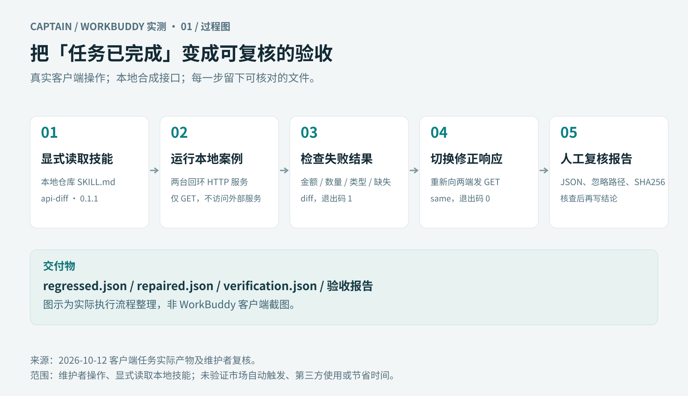
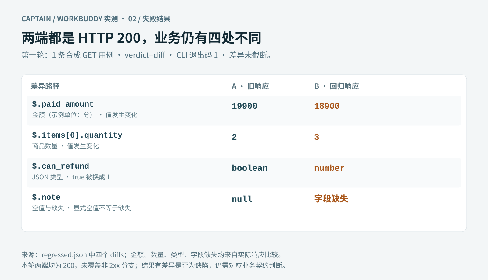
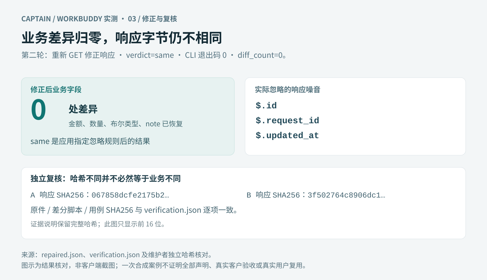

WorkBuddy 接口差分实测 · 成果图预览
三张图由 2026-10-12 实际任务结果及人工核对整理。它们是流程与结果图，不是客户端截图。公开案例为维护者自行运行的合成输入，不代表第三方用户使用或客户项目。

图1：把任务完成变成可复核的验收

图2：回归响应的四处实际差异

三张图由 2026-10-12 实际任务结果及人工核对整理。它们是流程与结果图，不是客户端截图。公开案例为维护者自行运行的合成输入，不代表第三方用户使用或客户项目。


